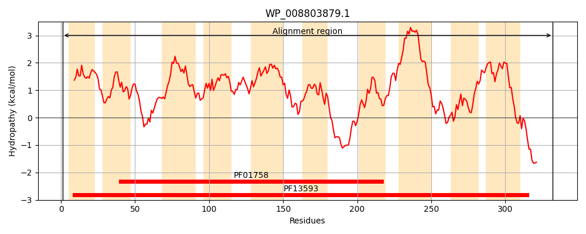
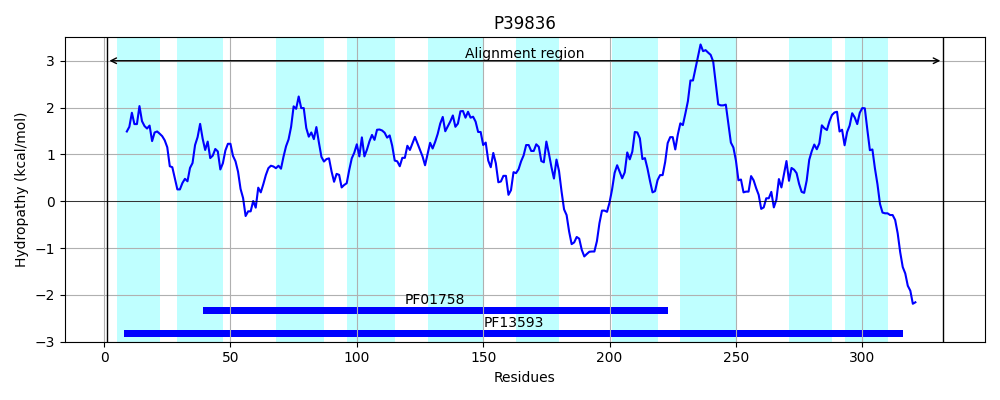
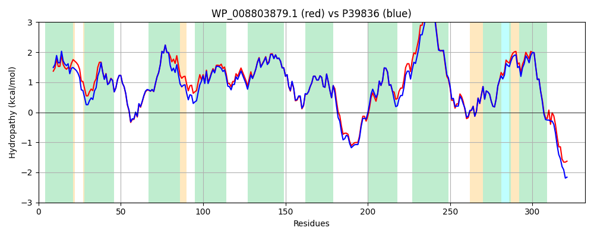

Hit Accession: P39836
Hit TCID: 2.A.28.3.4
Hit Description: gnl|BL_ORD_ID|10310 gnl|TC-DB|P39836|2.A.28.3.4 Uncharacterized protein yfeH - Escherichia coli (strain K12).
Mach Len: 332
e:0.000000
Query TMS Count : 10
Hit TMS Count: 10
TMS-Overlap Score: 9.600000
Predicted Substrates:CHEBI:9175;sodium(1+)
BLAST Alignment:
Score: 1524 , Bit scores: 591 bits, E-value: 0.0e+00, Alignment length: 332, Percentage identity: 88
Query: 1 MKLFRILDPFTATLVTVVLLASFFPARGAFVPFFEHLTTAAIALLFFMHGAKLSREAIIAGGSHWRLHLWVMCSTFILFPVLGVLFAWWAPVNVDPMLYSGFIYLCILPATVQSAIAFTSLAGGNVAAAVCSASASSLLGIFVSPLLVGVLMNLHGAGGSLEQVGKIMLQLLLPFVLGHLSRPWIGNWVAKHKKWIGKTDQTSILLVVYSAFSEAVVNGIWHKVGLGSLLFIVVVSLVLLAIVIAVNVFVARRCGFNKADEITIVFCGSKKSLANGIPMANILFPTSILGIMVLPLMIFHQIQLMVCAVLARRYKQQTDARLAEEKANAAKA 332
MKLFRILDPFT TL+TVVLLASFFPARG FVPFFE+LTTAAIALLFFMHGAKLSREAIIAGG HWRLHLWVMCSTF+LFP+LGVLFAWW PVNVDPMLYSGF+YLCILPATVQSAIAFTS+AGGNVAAAVCSASASSLLGIF+SPLLVG++MN+HGAGGSLEQVGKIMLQLLLPFVLGHLSRPWIG+WV+++KKWI KTDQTSILLVVY+AFSEAVVNGIWHKVG GSLLFIVVVS VLLAIVI VNVF+ARR FNKADEITIVFCGSKKSLANGIPMANILFPTS++G+MVLPLMIFHQIQLMVCAVLARRYK+QT+ A+++++A KA
Sbjct: 1 MKLFRILDPFTLTLITVVLLASFFPARGDFVPFFENLTTAAIALLFFMHGAKLSREAIIAGGGHWRLHLWVMCSTFVLFPILGVLFAWWKPVNVDPMLYSGFLYLCILPATVQSAIAFTSMAGGNVAAAVCSASASSLLGIFLSPLLVGLVMNVHGAGGSLEQVGKIMLQLLLPFVLGHLSRPWIGDWVSRNKKWIAKTDQTSILLVVYTAFSEAVVNGIWHKVGWGSLLFIVVVSCVLLAIVIVVNVFMARRLSFNKADEITIVFCGSKKSLANGIPMANILFPTSVIGMMVLPLMIFHQIQLMVCAVLARRYKRQTEQLQAQQESSADKA 332 | Protein Hydropathy Plots: |
|---|
|  |  |
Pairwise Alignment-Hydropathy Plot:
|
|---|
|  |